Jugement des dirigeants nazis
Entre 1945 et 1946, les puissances alliées organisent à Nuremberg un procès historique. Pour la première fois, les dirigeants d’un régime sont jugés pour crimes contre la paix, crimes de guerre et crimes contre l’humanité.
La salle du tribunal devient un symbole mondial : ceux qui ont déclenché la guerre doivent répondre de leurs actes.
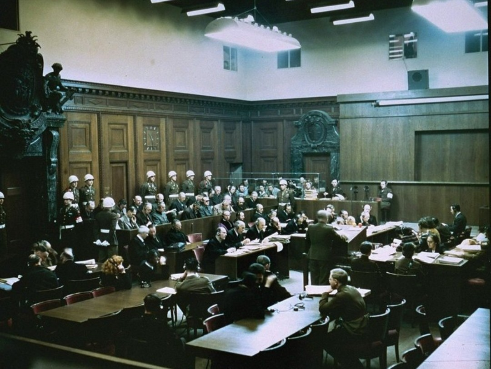
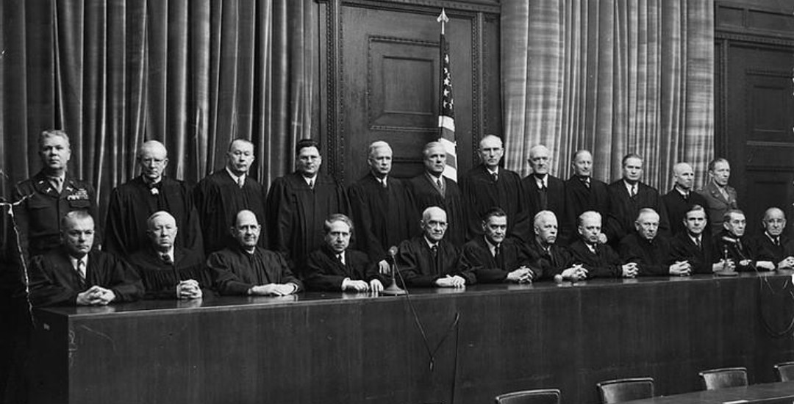

Les accusés dans le box
Les anciens dignitaires nazis sont assis dans le box, surveillés par des gardes. Ils entendent les charges : déportations, extermination, massacres, destruction de villes. Ceux qui donnaient des ordres sont désormais obligés de répondre de leurs crimes.
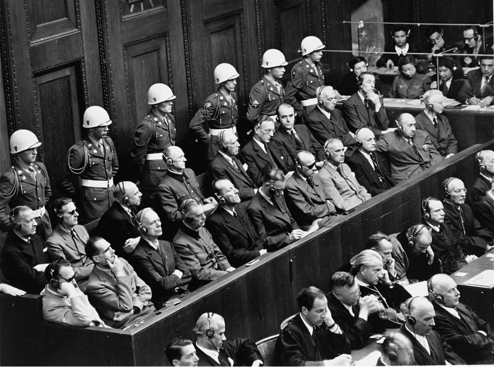

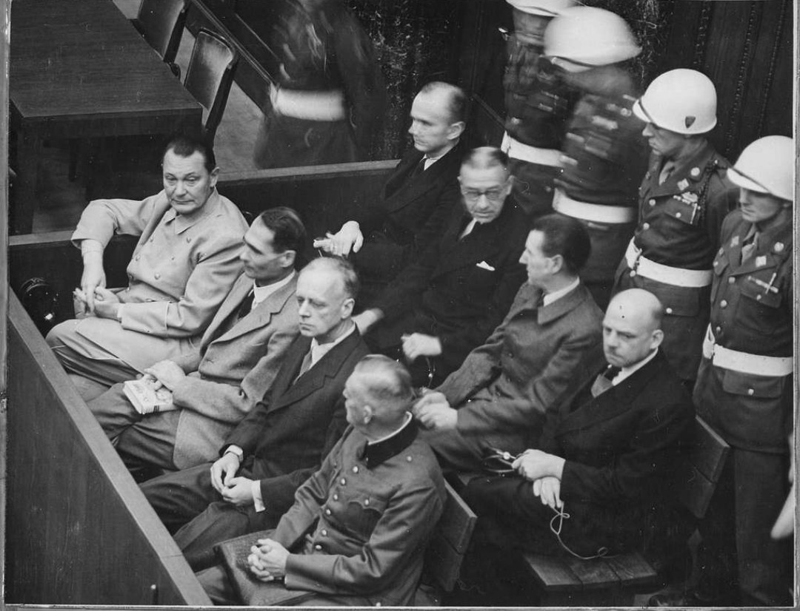
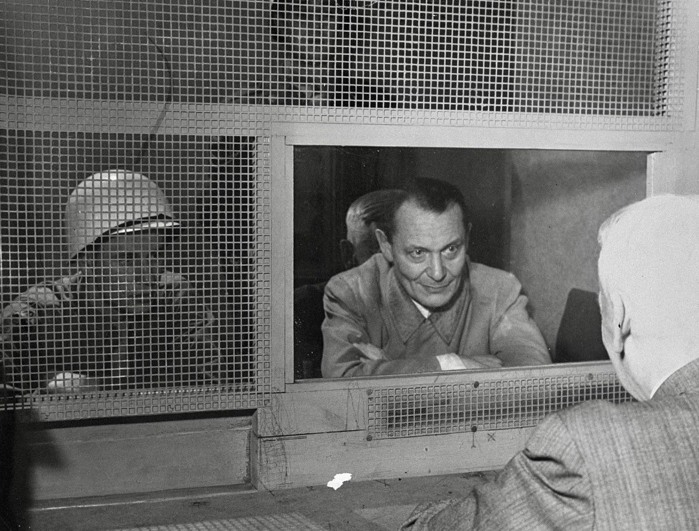
Témoins et preuves accablantes
Les témoins décrivent les camps, les colonnes de déportés, les exécutions. Les films, photos et documents officiels sont projetés dans la salle : les crimes nazis sont établis, détaillés, prouvés.
Le procès n’est pas une vengeance : c’est une démonstration méthodique de la responsabilité individuelle.
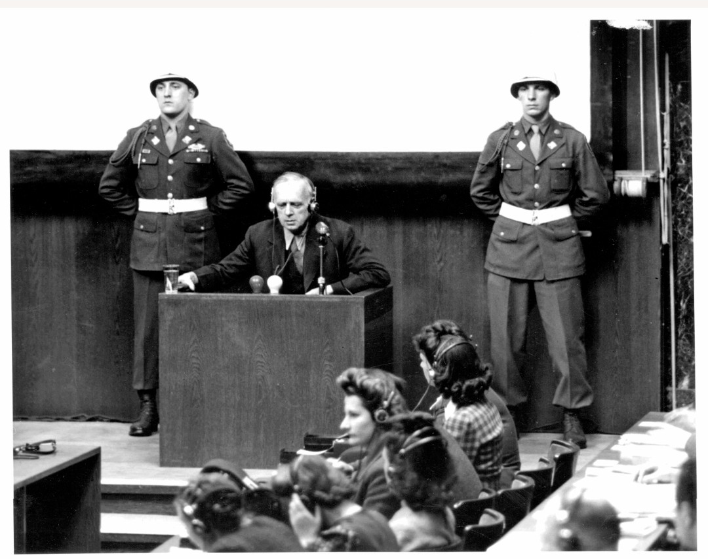
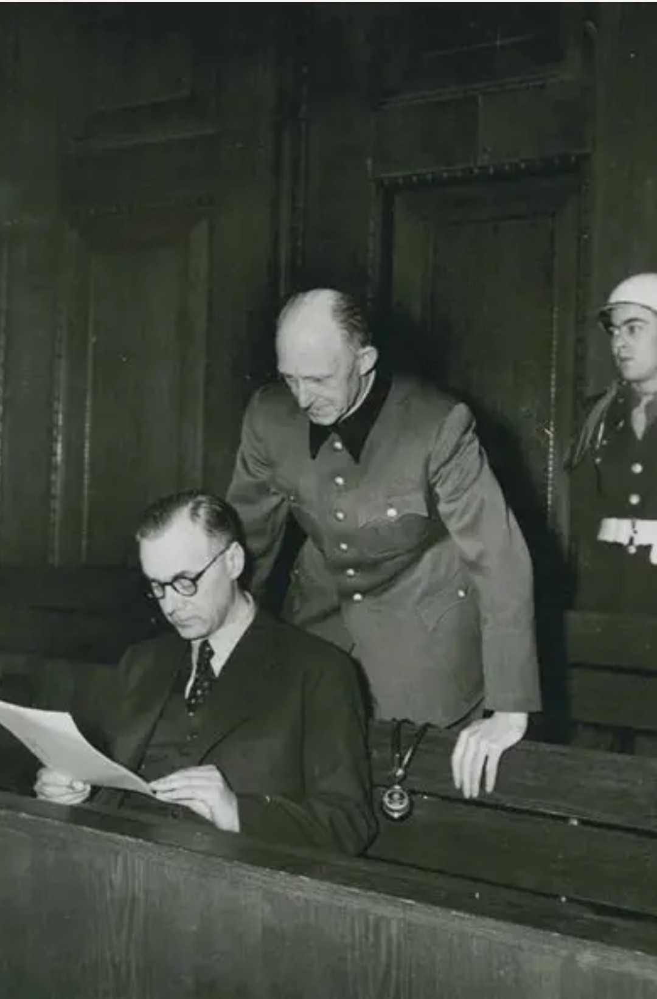
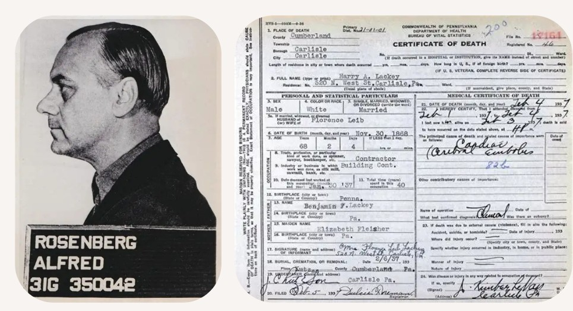
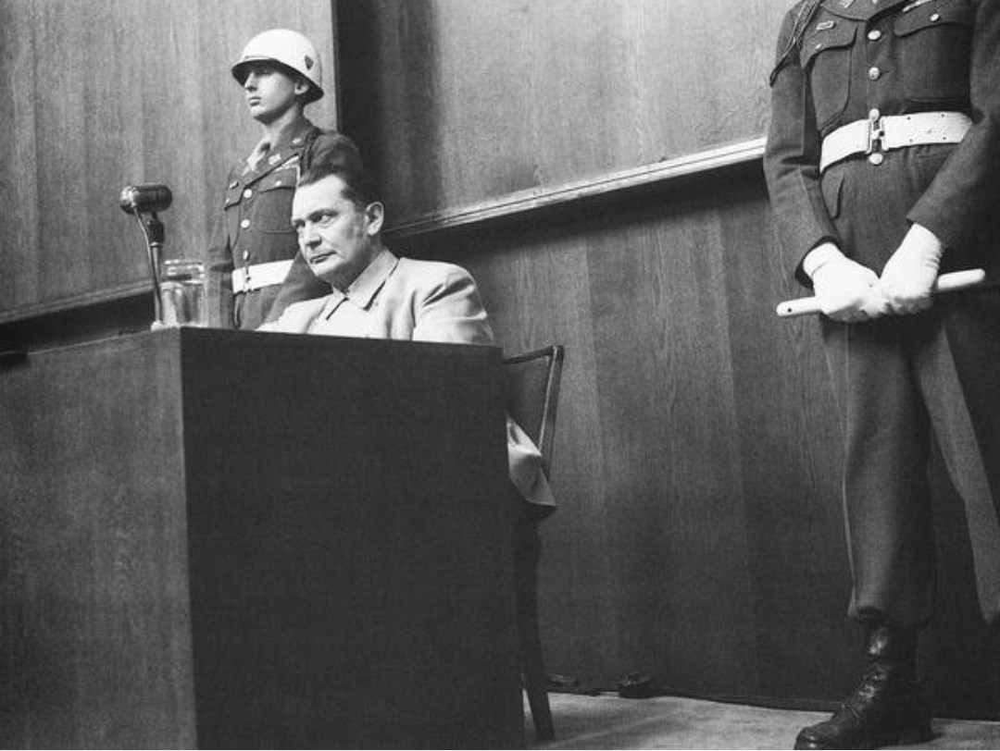
Enfermés en attendant le verdict
Hors du tribunal, les accusés sont détenus dans une prison militaire. Couloirs étroits, portes numérotées, surveillance permanente : l’époque où ils dominaient l’Europe est terminée.
Les photos des cellules montrent la chute brutale de ces hommes : de chefs de régime à prisonniers en attente de jugement.
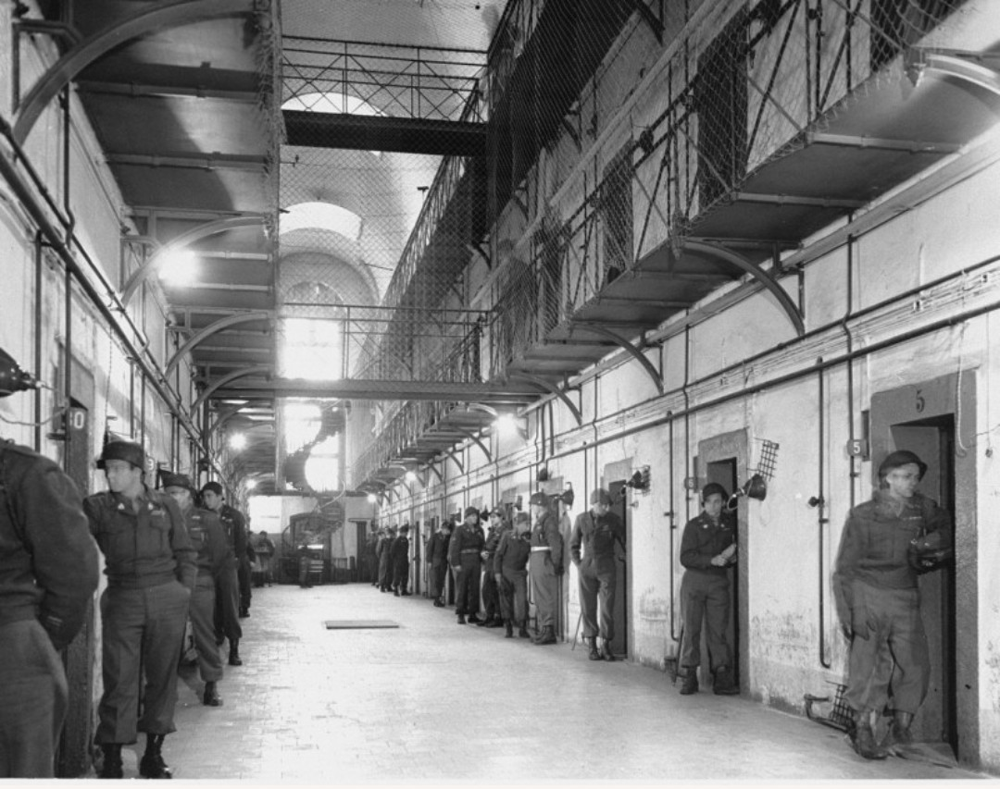
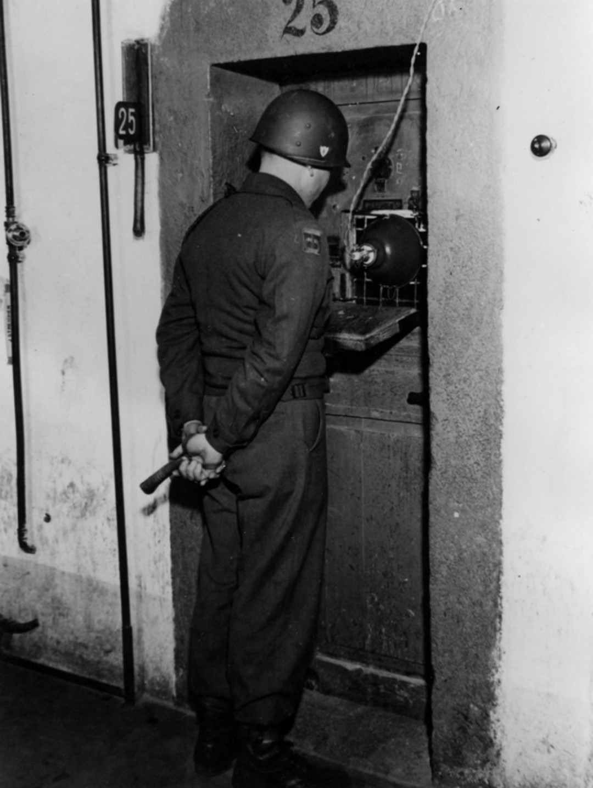
Ils ont payé pour leurs crimes
Plusieurs accusés sont condamnés à mort. Les exécutions ont lieu par pendaison, dans une salle austère où la potence attend les condamnés.
Les cercueils alignés montrent la conclusion du procès : les responsables des crimes nazis ont été jugés et punis.
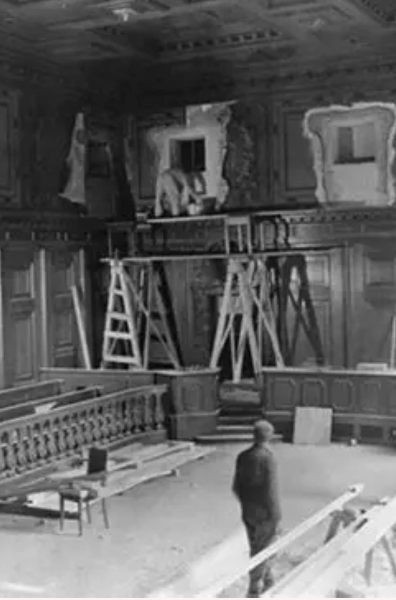
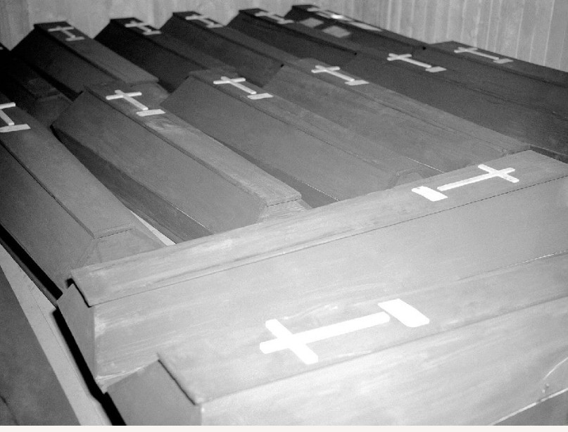

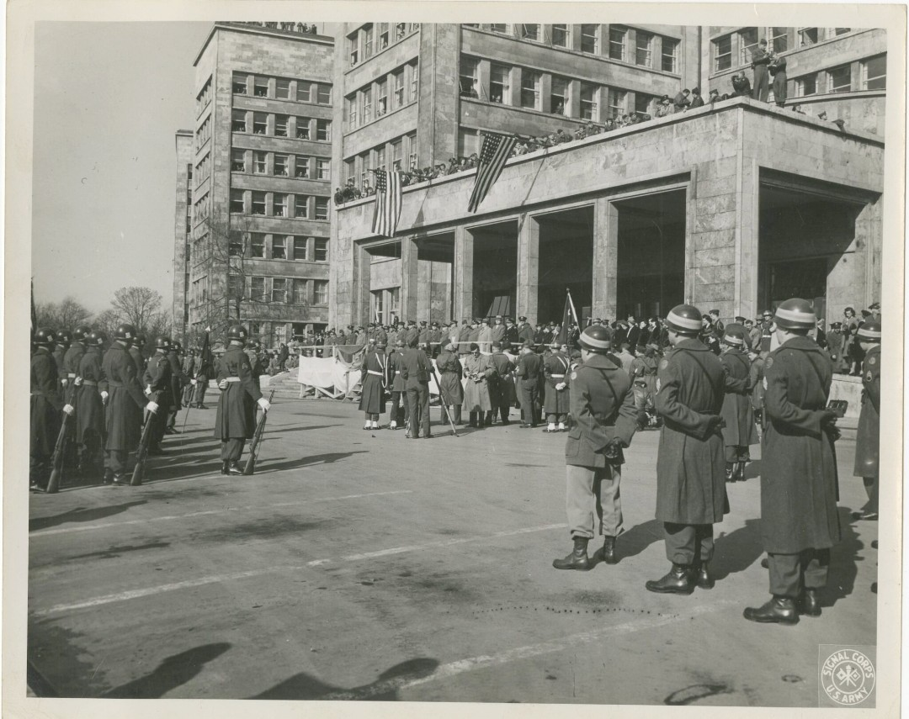
Le procès en un regard
Cette planche rassemble les moments clés : la salle, les accusés, les juges, la prison et les exécutions. Elle montre que Nuremberg est à la fois un lieu de mémoire et un symbole de justice rendue.